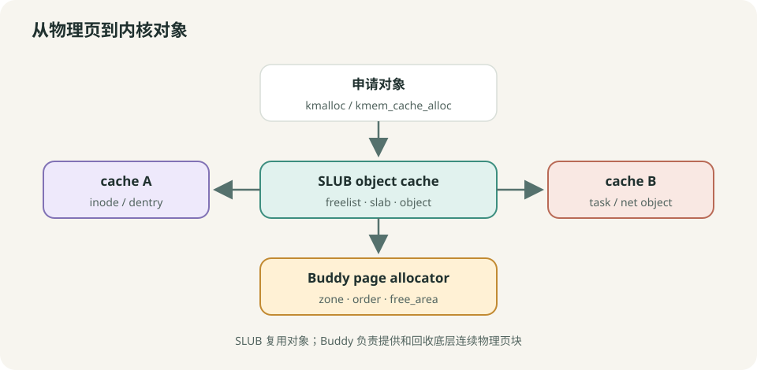
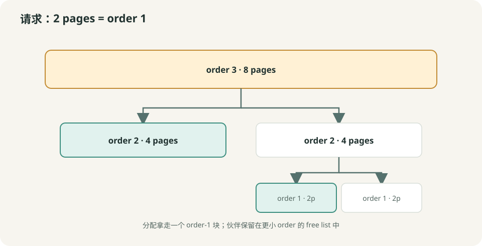
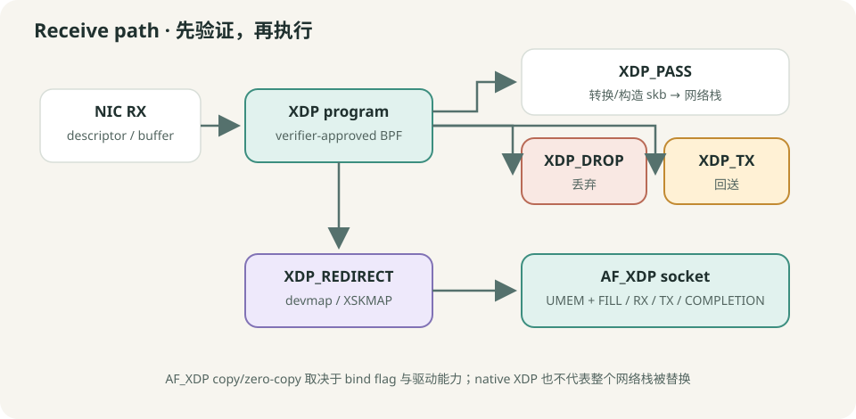

现代 Linux 内核机制：Buddy、SLUB、EEVDF、LKM 与 eBPF/XDP
从 Linux 0.11 的 mem_map 与 counter 调度出发，分层理解现代 Linux 的 Buddy 页面分配、SLUB 对象缓存、CFS/EEVDF 公平调度、可加载模块与 eBPF/XDP 安全扩展路径。
现代机制对照 · 先分清层次先把“现代内核”拆成四条机制链
比较 Linux 0.11 与现代 Linux，不能只列一张 API 名词表。更有效的办法是沿着四条机制链追踪：物理页如何分配、内核对象如何复用、CPU 时间如何公平分配、可扩展逻辑如何安全地进入内核。0.11 的 mem_map 和 counter 调度器是很好的历史基线，但它们不等于现代 Buddy/SLUB/EEVDF。


历史基线：0.11 的 mem_map 是页引用计数数组，不是现代 Buddy
0.11 的 mm/memory.c 用 mem_map[] 为每个可管理物理页保存一个字节计数。0 表示可分配，1 表示一个引用，值更大表示页面被多个映射共享；free_page() 递减计数，只有最后一个引用释放后才把页面归还为空闲。get_free_page() 扫描这张数组，找到空闲页后标记使用并清零页面。
这套设计和当时的任务数量、物理内存规模以及简单的分配需求相匹配。它可以解释页面共享和写时复制，却不具备现代 Buddy allocator 的 order 分组、zone、水位线、NUMA 节点和 per-CPU page lists。不要把 mem_map 直接称为“Buddy 空闲链表”。
现代 Linux 先由 page allocator 管理物理页。物理内存被组织为 node/zone；每个 zone 维护不同 order 的空闲块，内存申请通常会先找满足需求的最小块。参考 内核物理内存管理文档 和当前内存管理文档 Memory Management。
Buddy：以 2 的幂次页块拆分与合并
Buddy allocator 管理的是连续物理页块。order = 0 对应 1 页，order = 1 对应 2 页，order = 2 对应 4 页，以此类推。若请求 2 页而空闲链表中只有 8 页块，分配器会不断把块拆成大小相同的伙伴，保留一半继续拆，直到得到 order 1 的块。释放时，如果同一 order 的伙伴也空闲且满足合并条件，就合并成更高 order 的块。

在简化模型里，某个块的伙伴页框号可由 pfn ^ (1 << order) 计算；真实内核还必须检查该伙伴是否处于同一 zone、是否空闲、是否具有相同 order 和合适的迁移类型。公式只是定位候选伙伴，不是“异或后就能直接合并”。
allocate(order):
block = find_first_nonempty_order_at_least(order)
while block.order > order:
block.order -= 1
buddy = upper_half(block)
add_to_free_list(buddy, block.order)
return block
free(block):
while buddy(block, block.order) is free:
remove_buddy_from_free_list()
block = merge(block, buddy)
block.order += 1
add_to_free_list(block, block.order)这段是用于理解的伪代码，不是某个 Linux 版本的逐字实现。现代源码应沿 mm/page_alloc.c、struct free_area 和 zone 的 free list 阅读。Buddy 管理大块物理页，不能替代小对象缓存。
SLAB / SLUB：把页切成对象缓存，减少小对象分配成本
大量内核对象的大小相近，例如 inode、dentry、task 相关对象和网络结构。若每次都直接向页分配器申请一页，再自己切片、初始化和回收，会重复支付分配和初始化成本。Slab 家族在 Buddy 页面之上维护对象 cache：cache 以对象类型/大小组织一批 slab，slab 再由一个或多个页组成，空闲对象在 cache 内复用。
经典 SLAB 设计有较多 per-cache/per-slab 管理状态；SLUB 采用更简化的 slab 管理路径，并把常见分配/释放快路径优化为更轻量的 freelist 操作。不要将 SLAB 与 SLUB 当成两个完全不同的“页分配器”：它们属于对象分配层，底层仍然需要页分配器供给页。
在现代主线中，SLUB 是当前主要实现；文档提供 slab_debug、red zoning、poison、user tracking 和 slabinfo 等诊断入口。可用 SLUB/slab allocator 用户指南 观察缓存调试参数。不要把 SLUB 的调试开关理解为零成本：红区、poison 和分配跟踪会增加内存/CPU 开销。
kmalloc(sizeof(struct inode), GFP_KERNEL)
│
▼
kmalloc-size cache / inode cache
│
▼
SLUB object freelist
│
▼
slab pages (one or more pages)
│
▼
Buddy page allocator调试实践：先看 /proc/slabinfo 或 slabinfo 输出；再针对单个 cache 开启 slab_debug=FZ,dentry 等选项。若在性能敏感路径全局打开所有调试，可能让原始时序发生变化。
调度：0.11 counter、CFS vruntime、EEVDF deadline 是三种不同记账模型
0.11 的 schedule() 扫描任务表，选择状态为 runnable 且 counter 最大的任务；如果没有可运行任务剩余时间片，则按 (counter >> 1) + priority 重新计算。它是一个小型、直观的时间片调度器，扫描任务槽位的成本与当时的规模相匹配。
CFS 在 Linux 2.6.23 合入。它用权重归一化的 vruntime 衡量任务已经获得多少 CPU 服务，并用按虚拟运行时间排序的红黑树组织可运行实体；理想化目标是让不同权重任务获得与其权重相称的 CPU 时间。CFS 不再简单地“谁的 counter 最大就跑谁”。
Linux 从 6.6 开始逐步向 EEVDF 过渡。EEVDF 先判断任务是否 eligible（例如 lag 非负，意味着它还欠有公平 CPU 时间），再按虚拟 deadline 选择最早截止的 eligible 任务；较短请求 slice 的延迟敏感任务因此有机会更快获得 CPU。当前文档仍描述 CFS 在让位给 EEVDF，而不是宣称 CFS 所有数据结构/代码在一个版本里被一次性删除。
LKM：动态加载内核代码，不等于把代码放进安全沙箱
Loadable Kernel Module（LKM）允许内核在运行时装入或卸载驱动、文件系统或其他扩展代码。模块与内核共享特权级和地址空间：模块代码一旦破坏内核内存，仍可能导致整个内核崩溃。模块的“可卸载”是生命周期能力，不是进程隔离或权限沙箱。
模块入口由 module_init() 声明，退出清理由 module_exit() 声明；构建时使用 Kbuild，导出的符号和模块依赖由内核模块加载器处理。模块还受到内核版本/配置、符号版本、签名策略和 license 标记影响。若编译进内核，module_init 会变成启动阶段 initcall；若作为 .ko，则在模块插入时调用。
#include <linux/init.h>
#include <linux/module.h>
static int __init hello_mod_init(void)
{
pr_info("hello_mod: loaded\n");
return 0;
}
static void __exit hello_mod_exit(void)
{
pr_info("hello_mod: unloaded\n");
}
module_init(hello_mod_init);
module_exit(hello_mod_exit);
MODULE_LICENSE("GPL");
MODULE_DESCRIPTION("A minimal lifecycle example");# Kbuild
obj-m := hello_mod.o
# build against the exact target kernel build tree
make -C /lib/modules/$(uname -r)/build M=$PWD modules
# in a disposable test VM
sudo insmod hello_mod.ko
dmesg | tail
sudo rmmod hello_mod这段代码是现代 Linux 的模块示例，不是 0.11 的可编译代码。外部模块应按目标内核的 Kbuild 外部模块文档 构建；入口/退出语义见 Driver Basics。
eBPF：受验证的扩展程序，不是任意内核 C 函数
eBPF 程序由用户态加载器提交给内核。Verifier 在运行前模拟寄存器、栈和指针状态，检查每条可能执行路径上的访问范围、对齐、初始化状态、可调用 helper/kfunc 参数与程序退出路径。程序通过验证后，可以解释执行或由 JIT 转为机器码。BPF maps 为内核程序和用户态共享状态提供 map 类型存储。
Verifier 并不允许程序随意读写任意内核地址，也不允许随意调用任意内核函数；可访问上下文、helper、kfunc 和 map 类型由 program type 与内核注册接口限定。还要纠正一个旧说法：现代 eBPF 并非“所有循环都不允许”。有界循环从 Linux 5.3 起被支持，但循环上界、指针范围和 verifier 复杂度仍必须可证明。
SEC("xdp")
int xdp_guard(struct xdp_md *ctx)
{
void *data = (void *)(long)ctx->data;
void *end = (void *)(long)ctx->data_end;
struct ethhdr *eth = data;
if ((void *)(eth + 1) > end)
return XDP_ABORTED; /* packet header truncated */
if (eth->h_proto == bpf_htons(ETH_P_ARP))
return XDP_DROP;
return XDP_PASS;
}Verifier 的指针类型与边界跟踪见 eBPF verifier 文档；maps 见 BPF maps 文档；BPF API/稳定性边界见 BPF Design Q&A。示例只是逻辑片段，真实编译还需包含头文件、libbpf helper、section 和加载器。
XDP / AF_XDP：把可编程过滤推到接收路径前端
XDP 是 eBPF 在网络接收路径上的一种挂载点。原生 driver mode 可在驱动收包路径较早的位置运行程序，减少为后续协议栈创建 skb 的开销；generic/SKB mode 则在已有 skb 的路径上提供兼容性，性能特征不同。XDP 常见动作包括 PASS、DROP、TX 和 REDIRECT；是否支持某些动作还取决于网卡驱动能力。

AF_XDP 通过 UMEM 和 FILL/COMPLETION/RX/TX 四类 ring 将 XDP frame 与用户态 socket 协作。必须明确区分 copy 与 zero-copy：驱动支持并不自动保证 zero-copy；用户可以请求 XDP_ZEROCOPY，若设备不支持则 bind 失败，而不是悄悄保证无拷贝。参考 AF_XDP 官方文档 与 XDP RX metadata 文档。
选择哪种扩展机制：不要把驱动、模块和 BPF 混为一谈
| 问题 | 优先考虑 | 关键约束 |
|---|---|---|
| 需要控制硬件寄存器、DMA、中断和设备生命周期 | 内核驱动 / LKM | 必须正确管理资源、并发、锁、DMA 与错误回滚 |
| 需要内核内部对象或协议的可插拔功能 | 合适的内核子系统接口或模块 | 内部 API 不保证跨版本稳定；模块仍有完整内核权限 |
| 需要可动态加载的过滤、观测、策略或 tracing 程序 | eBPF | Verifier、program type、helper/kfunc 和权限策略限制能力 |
| 需要极早期收包过滤、转发或用户态高速 packet I/O | XDP / AF_XDP | 依赖驱动能力、队列映射、UMEM 所有权和 copy/zero-copy 模式 |
这几类机制有交集，但不是同一个层次。eBPF 可挂载在多个子系统 hook 上；XDP 是网络接收路径的一类 eBPF program type；AF_XDP 是面向用户态收发包的 socket 接口；LKM 则能注册更广泛的内核代码和驱动功能。
读源码与动手验证的检查清单
- 内存：解释
mem_map的引用计数语义；画出 8 页块申请 2 页时的拆分和回收合并。 - SLUB：查看
/proc/slabinfo，选择单个 cache 打开 debug，不要一上来对所有 cache 开启高成本检查。 - 调度：用两任务、不同 nice 权重的例子说明 vruntime 为什么归一化；再说明 EEVDF 为什么要先判 eligible。
- LKM：在一次性 VM 中加载、查看日志、卸载；验证 init/exit 都发生，检查
lsmod和modinfo。 - eBPF：故意构造一个越界 packet access，观察 verifier 的拒绝日志；再加上 data_end 边界检查。
- XDP：在 veth/network namespace 实验环境中分别测试 generic 与 native 支持；查询 AF_XDP zero-copy 能力，不要直接在生产网卡上试验 DROP 程序。
eBPF verifier 是否会拒绝所有循环？（展开核对）
不是。Linux 5.3 起支持可证明有界的循环；但循环必须能够被 verifier 分析，复杂度和指针边界仍会导致程序被拒绝。
AF_XDP 是否天然就是 zero-copy？（展开核对）
不是。AF_XDP 有 copy 和 zero-copy 模式。XDP_ZEROCOPY 会强制请求零拷贝，不支持时 bind 失败。
现代内核权威资料
- Physical Memory：node、zone、buddy free_area 与内存分区。
- SLUB/slab allocator guide：cache 调试、poison、red-zone 和 slabinfo。
- CFS Scheduler：vruntime、红黑树和 2.6.23 合入背景。
- EEVDF Scheduler：6.6 起的迁移、lag、eligible 和 virtual deadline。
- Driver Basics：module_init/module_exit。
- Building External Modules：外部模块 Kbuild。
- eBPF verifier 与 BPF maps：安全验证与共享状态。
- AF_XDP：UMEM、ring、copy/zero-copy 和队列绑定。
这一章的目的不是把现代内核简化成四个名词，而是给每个名词一个明确的责任边界、数据结构和可验证的源码入口。